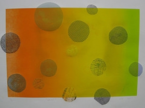
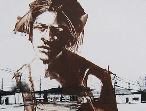

Monotype Marathon 2009 Exhibition: July 1 – July 18, 2009 See artists at work Business Sponsors: Materials and services also provided by: Studio Partners: |
 
|
The San Jose Institute of Contemporary Art (ICA) presents it’s Annual Monotype Marathon – a print exhibition and fundraising auction that features the work of the best printmakers in the Bay Area. The exhibition runs from July 1st to July 18th at the ICA and culminates with a silent auction on the evening of July 18th. Event sponsorships are on sale now at the ICA.
The Monotype Marathon begins with an intensive weekend of art-making by over seventy-five artists in printmaking studios throughout the Bay Area. These artists are invited by the ICA to produce a number of prints during the weekend event being held on May 30th and 31st. The ICA selects the best work produced by each artist to show in the exhibition and offers the work for sale in the auction. Proceeds raised from the event go toward the ICA’s exhibitions and educational programs.
New to the event this year is a show of prints from the ICA Print Center’s Artists-in-Residence program. Work from these artists will be featured in the exhibition and available for sale at the auction.
The ICA seeks support for the Monotype Marathon from its members and from the community by selling event sponsorships of $300 (Sponsor level) and $600 (Patron level) that enable artists to participate in the printmaking workshops. Each $300 Sponsor donation serves as the opening bid on any print in the auction, or can be used toward the purchase of an ICA Artist-in-Residence print. Each $600 Patron donation enables two artists to participate and allows the Patron to split the donation and bid on two prints at the auction, or use it toward the purchase of an Artist-in-Residence print.
In addition, members of the public are invited to learn about printmaking by creating their own monotype at a Novice Printmaking Workshop being held on Saturday, July 11th from 10am to 2pm at the ICA. The workshop fee is $250 and includes all materials and lunch. Space is limited to eight participants. Call the ICA at 408.283.8155 to register.
The monotype is a one-of-a-kind piece of artwork. It is a painterly form of printmaking requiring ink, a surface of which to print it, paper and a press. The artist uses a variety of tools to apply the ink and sometimes adds collage, transfers, fabric and other materials.
The ICA Print Center is a fine art printmaking studio located at the ICA. The full-service facility offers educational programming, workshops, and production facilities to novice and experienced artists. The studio is managed by an on-site Master Printer and accommodates up to six artists. The 2009 workshop schedule is available online at www.sjica.org.
The ICA Artist-in-Residence Program is an invitational program launched in November 2007. Each year four artists are invited by the ICA’s curatorial staff to participate in two-week residencies at the ICA Print Center. Artists work with the ICA Master Printer to create a suite of monotypes, an edition of etchings, an artist book, or another print-based project of their choosing. A complete list of participating artists is available on the ICA website. Prints from the editions can be purchased at the ICA.
The Monotype Marathon 2009 is sponsored in part by Heritage Bank of Commerce. The ICA gratefully acknowledges additional support from the David and Lucile Packard Foundation, and the Andy Warhol Foundation for Visual Arts, Silicon Valley Community Foundation, Adobe Systems Incorporated, and members of the ICA.
The San Jose Institute of Contemporary Art (ICA) is an energetic art space located in downtown San Jose dedicated to making contemporary art accessible and exciting to audiences of all ages and backgrounds. Exhibitions are presented in three galleries that display the most current, relevant and often challenging art from the region, the nation and the world. The ICA is activated by opening receptions, South First Friday gallery walks, after-dark programming in the front windows, panel discussions, printmaking workshops, brown bag lunches and impromptu conversations in the galleries. Admission is always free.
# # #
San
Jose Institute of Contemporary Art 560 South First Street San Jose, CA 95113 tel (408) 283-8155 fax (408) 283-8157 |